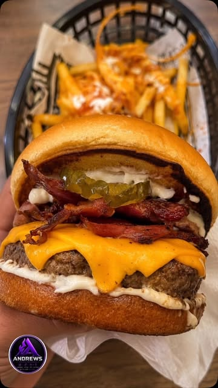
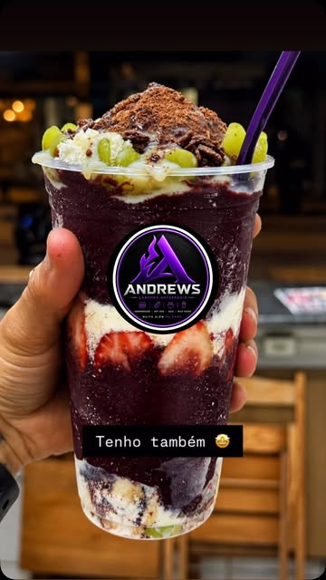

DO PRIMEIRO Gole À ÚLTIMA MORDIDASABOR QUE
SABOR QUE
MARCA.
FOME QUE
PASSA.
Do hambúrguer artesanal ao açaí caprichado.
Seu próximo favorito está na Andrews.
DELIVERY✦RETIRADA NA LOJA


SALGADO?
OS DOIS.FOTOS REAIS. VONTADE REAL.
QUAL É A SUA VONTADE HOJE?UM CARDÁPIO.
UM CARDÁPIO.
MUITAS TENTAÇÕES.
Tem o salgado, tem o gelado.
E tem aquele que você já está imaginando.
A PAUSA TEM NOME.
PRA QUEM NÃO QUER ESCOLHER SÓ UMSE É PRA
SE É PRA
MATAR A VONTADE,
VEM DE ANDREWS.
Um hambúrguer pra fome. Um açaí pra refrescar. Um milk-shake pra fechar. Por aqui, doce e salgado têm lugar na mesma mesa.
Escolha seu favorito e aproveite com delivery ou retirada na loja.
Conheça a AndrewsDA TELA PRA SUA MESABATEU A FOME?
BATEU A FOME?
A GENTE SE ENTENDE.
01
Escolha sua vontade
Artesanal, prensado ou bem gelado. Encontre o que combina com seu momento.
02
Chama a Andrews
No Instagram, consulte o cardápio, os valores e a disponibilidade do dia.
03
Combine a entrega
Delivery ou retirada na loja: confirme os detalhes do seu pedido com a equipe.